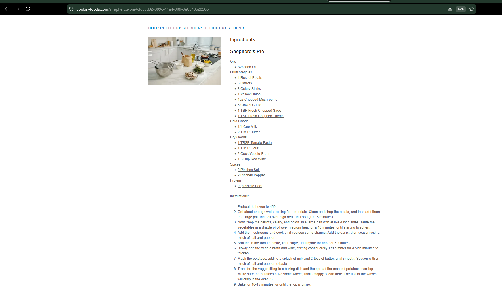

Meals
Shepherd's Pie
Vegetarian shepherd’s pie with savory mushroom-beef filling and mashed potato topping.
Ingredients
Potato Topping
- 4 russet potatoes
- ¼ cup milk
- 2 tbsp butter
- Salt and pepper, to taste
Filling
- Avocado oil
- 3 carrots, diced
- 3 celery stalks, diced
- 1 yellow onion, diced
- 4 oz mushrooms, chopped
- 6 garlic cloves, minced
- 1 tbsp tomato paste
- 1 tbsp flour
- 2 cups vegetable broth
- ⅓ cup red wine
- 1 tsp fresh sage, chopped
- 1 tsp fresh thyme, chopped
- Impossible beef
Instructions
1
Prepare potatoes
Preheat oven to 450°F. Boil potatoes until soft, 10–15 minutes, then mash with milk, butter, salt, and pepper.
2
Cook vegetables
Sauté carrots, celery, and onion until softened. Add mushrooms and cook until you see some browning.
3
Build filling
Add garlic, tomato paste, flour, sage, and thyme. Cook 1–2 minutes. Slowly add broth and wine, then simmer until thickened.
4
Add protein
Stir in impossible beef and cook until heated through.
5
Assemble and bake
Transfer filling to a baking dish. Spread mashed potatoes on top, leaving texture and waves. Bake 10–15 minutes until the top is crisp.
Notes
- Texture on the mashed potatoes helps the top crisp in the oven.